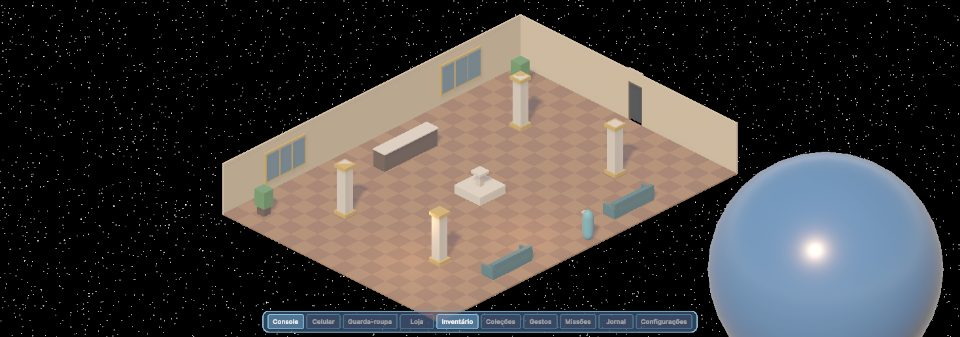
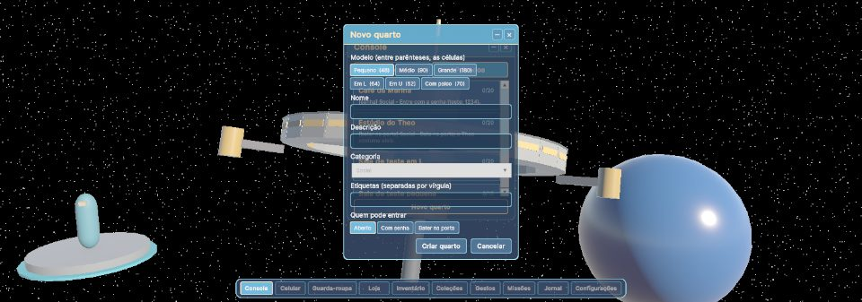
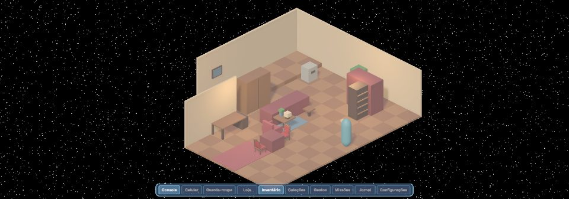
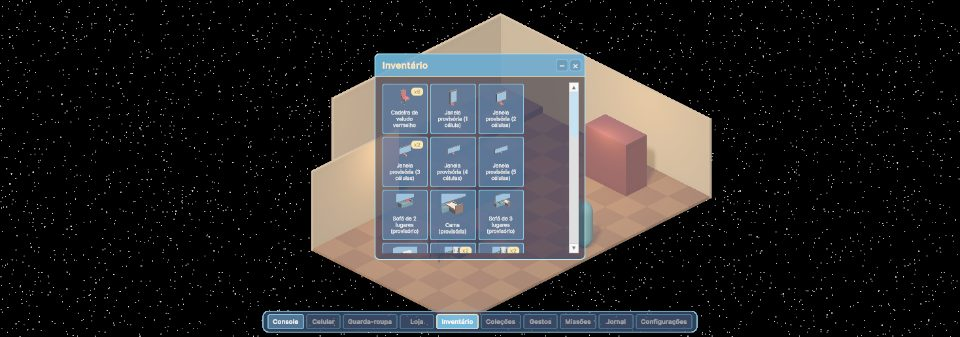

SpaceTopia
Um hotel de luxo em órbita da Terra, para viver, decorar e se divertir com amigos.

O jogo
SpaceTopia é um jogo social para PC, com câmera isométrica e visual 3D estilizado. Ele se passa na Elysium, uma estação espacial que funciona como hotel em órbita da Terra.
Aqui não existe combate. O foco é conviver: conversar, decorar o seu quarto, montar o seu visual, cuidar de um pet e colecionar peças raras.
Em uma frase
Um MMO social, sem combate, sobre morar, decorar e se divertir num hotel flutuando sobre a Terra.
Destaques
O que você vai poder fazer na estação Elysium.
Convivência
Salas públicas cheias de gente, chat em balões, amigos, gestos e danças. Dá para ir de um lugar a outro por portas, portais e pelo Console da estação.
Quartos para decorar
Escolha um modelo de quarto, dê nome e etiquetas, defina quem pode entrar (aberto, senha ou bater na porta) e monte tudo do seu jeito, com móveis em camadas e plataformas.
Moda e personagem
Dois corpos, muitas combinações de rosto, cabelo, pele, cores e roupas. A personalização fica no que importa para se reconhecer de longe.
Pets e colecionáveis
Pets que acompanham você, coleções de móveis em quatro estilos, eventos e itens para completar.
Um hotel de verdade
Lobby, salas temáticas, áreas de lazer e uma estação enorme girando no espaço, com a Terra ao fundo.
Sem pressa e sem combate
Nada de obrigação nem de competição por padrão. Cada pessoa joga no seu ritmo, com seus amigos.
Imagens do jogo
Capturas reais do protótipo em desenvolvimento. As peças e os cenários ainda são provisórios; o visual final virá com a direção de arte.





Andamento
O jogo é feito por uma pessoa, em marcos. Cerca de 37% das tarefas dos marcos listados já estão prontas ou aguardando teste.
Inspirações
Se você é autor de alguma imagem e quer que ela saia desta página, avise abrindo um aviso em https://github.com/BrendonStos/spacetopia/issues e ela será removida.